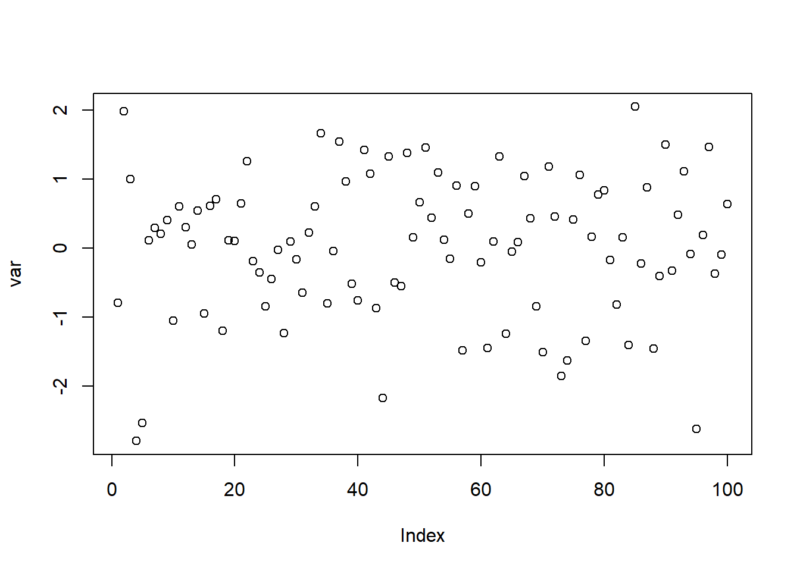
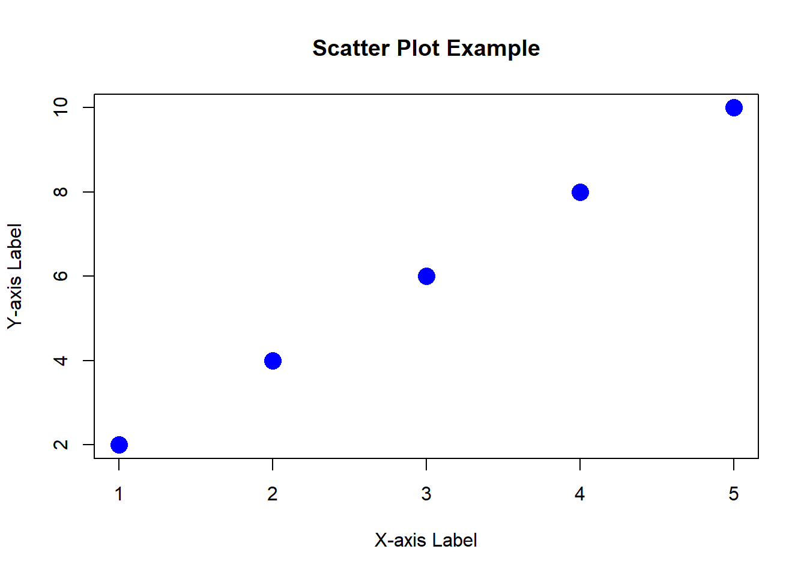
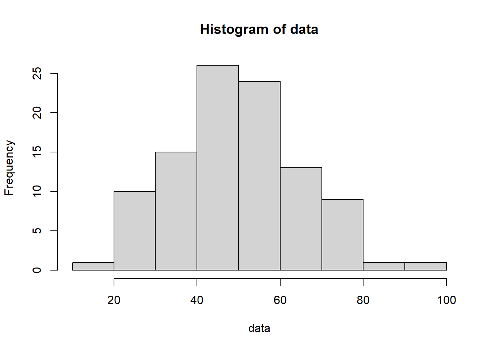

Your title here
🧬🔬
Daniel Fürth
Fürth lab, Uppsala University 
This is a standard slide.
Here you can add some text. Next slide starts with the hash symbol (## Title) to mark its title.
import numpy as np #works with python as well
numbers = [10, 20, 30, 40, 50]
arr = np.array(numbers)
mean = np.mean(arr)
print("Mean:", mean)Mean: 30.0Columns
- Topic 2
- Level 1
- Level 2
- Level 3
- Topic 3
- Level 1
- Sublevel 4
- Level 2
- Level 3
- Level 1
- Topic 4
- Level 1
- Level 2
- Level 3
🗣 Content
This is what will be discussed today.
Always good to explain the agenda so audience can have clear expectations.
Therse are animated bullet points:
- 📜 Point one
- 🧫 Point two
- 🚀 Point three
…You can use Font Awesome symbols as well .
Slide with a table
Using Markdown you can also write tables
| Reagent | Volume | Final Concentration |
|---|---|---|
| Sterile water or NF-water | 840 µl | |
| 10xPBS | 100 µl | 1x |
| 10% Tween-20 | 10 µl | 0.1% Tween-20 |
| 10% BSA | 50 µl | 1% BSA |
| TOTAL: | 1000 µl |
I recommend the online Markdown table generator: https://www.tablesgenerator.com/markdown_tables
Links
I recommend the online Markdown table generator: https://www.tablesgenerator.com/markdown_tables
Links like this 👆 are written by this code:
[text to display](https://www.google.com/)Code blocks
Here is some code for a plot in R:
# Sample data
x <- c(1, 2, 3, 4, 5)
y <- c(2, 4, 6, 8, 10)
# Create a scatter plot using Base R plot function
plot(x, y,
type = "p", # 'p' for points
col = "blue", # Point color
pch = 16, # Point shape (16 for filled circles)
cex = 2, # Point size
xlab = "X-axis Label", # X-axis label
ylab = "Y-axis Label", # Y-axis label
main = "Scatter Plot Example" # Main title
)Code blocks
Here is some R code executed:
# Sample data
x <- c(1, 2, 3, 4, 5)
y <- c(2, 4, 6, 8, 10)
# Create a scatter plot using Base R plot function
plot(x, y, type = "p", col = "blue", pch = 16, cex = 2, xlab = "X-axis Label", ylab = "Y-axis Label", main = "Scatter Plot Example" )
Code blocks
Here is some R code executed without echo=TRUE:
# Sample data
x <- c(1, 2, 3, 4, 5)
y <- c(2, 4, 6, 8, 10)
# Create a scatter plot using Base R plot function
plot(x, y, type = "p", col = "blue", pch = 16, cex = 2, xlab = "X-axis Label", ylab = "Y-axis Label", main = "Scatter Plot Example" )
Statistics in text
I have some R code:
data <- rnorm(100, 50, 15)
hist(data)
The mean is:
- 49.7094232
The standard deviation is:
- 15.2763196
And if I use round():
- 49.71
- 15.28
📜 You can also have a slide with a website embedded
📜 Just a title slide
📜 Two-column image/text slide
This is a two column container when you want text next to an image.


Citations
Add your references by specifying the footer like this:
::: footer
r fa("book", fill = "steelblue") [Sanger et al. 1977 _PNAS_](https://doi.org/10.1073/pnas.74.12.5463)
:::Then a link will display the citation in the footer next to the book icon .
In this case a paper from Fred Sanger published in PNAS 1977.
Fragments
Incremental text display and animation with fragments:
Fade in
Slide up while fading in
Slide left while fading in
Fade in then semi out
. . .
Strike
Highlight red
Chalkboard
Free form drawing and slide annotations

Use the chalkboard button at the bottom left of the slide to toggle the chalkboard.

Use the notes canvas button at the bottom left of the slide to toggle drawing on top of the current slide.
You can also press b to toggle the chalkboard or c to toggle the notes canvas.
Slide Backgrounds
Set the background attribute on a slide to change the background color (all CSS color formats are supported).
Different background transitions are available via the background-transition option.
Media Backgrounds
You can also use the following as a slide background:
An image:
background-imageA video:
background-videoAn iframe:
background-iframe
Absolute Position
Position images or other elements at precise locations


Auto-Animate
Automatically animate matching elements across slides with Auto-Animate.
Auto-Animate
Automatically animate matching elements across slides with Auto-Animate.